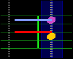
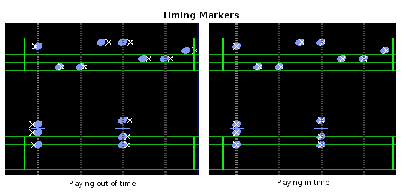

PianoBooster is a fun way of playing along with a musical accompaniment and at the same time learning the basics of reading musical notation. The difference between playing along to a CD or a standard MIDI file is that PianoBooster listens and follows what you are playing on a MIDI piano keyboard.
For a PREVIEW of PianoBooster-0.7.3 see this post in the forum NEW PianoBooster executable
PianoBooster is a free (Open Source) program that plays Standard Midi Files and allows you to change the speed of playback and transpose the music etc. There is a scrolling musical stave that shows the notes for just one part from all the parts in the complete musical arrangement.
 PianoBooster has been designed to allow you to play along on a MIDI piano keyboard with the scrolling notes shown on the screen. The notes you press on the keyboard appear as coloured lines on the musical stave, the colour of which depends whether you have pressed the right or wrong note.
A different musical instrument sound is used for your playing depending whether you are playing the right or wrong notes. This feature also allows PianoBooster to be used with printed sheet music so you can hear if you are playing the right notes while at the same time keeping your eyes on the printed score. The music accompaniment will automatically wait for you to find and play the correct notes in the piece.
Watch the video and see the features of PianoBooster in action.
Watch Piano Booster in action
More videos are available here and here
Timing markers show whether you are playing ahead or behind of the beat. They appear as white crosses that are drawn over the note. Timing markers are new in version 0.6.2

Piano Booster is piano teaching software that can provide piano lessons for beginners as well as for advanced players. It can be used for teaching music theory and is useful for piano practice and learning piano technique.